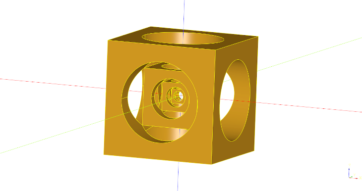
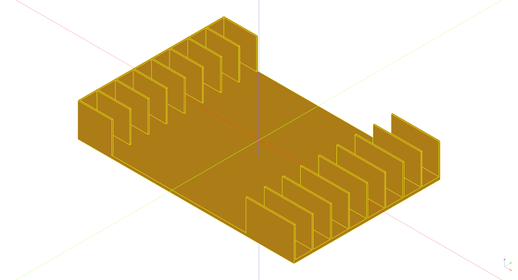
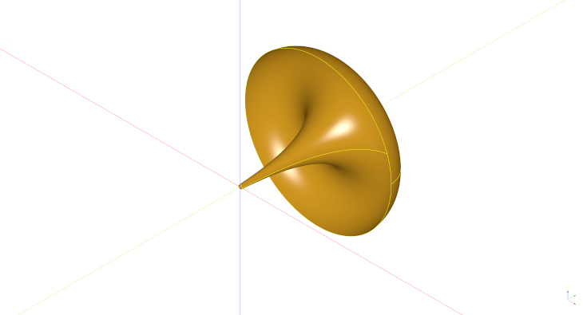
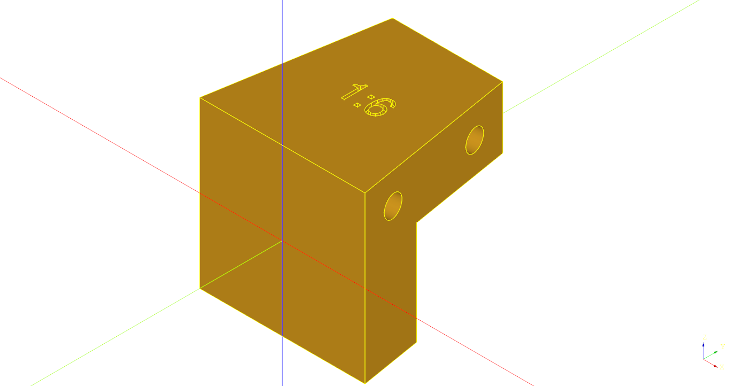
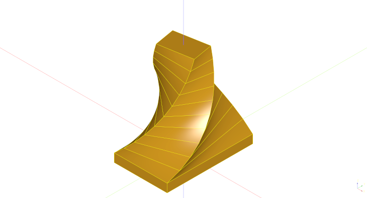
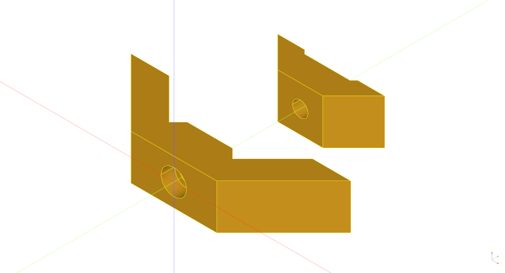
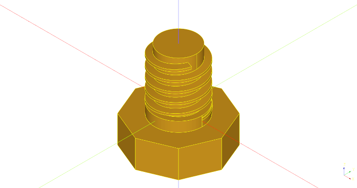
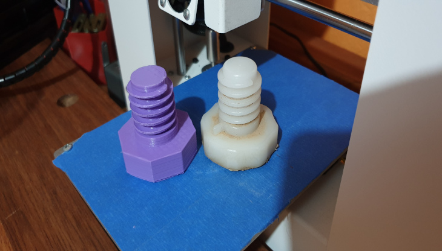
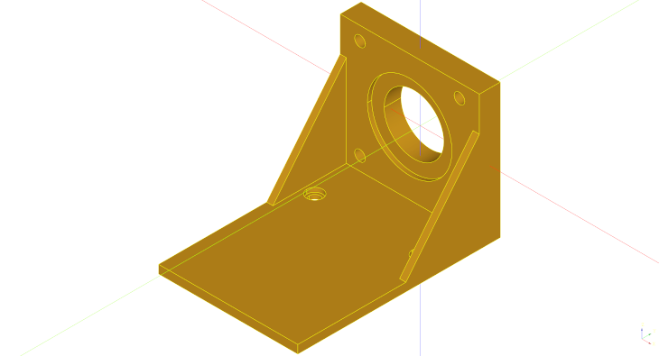
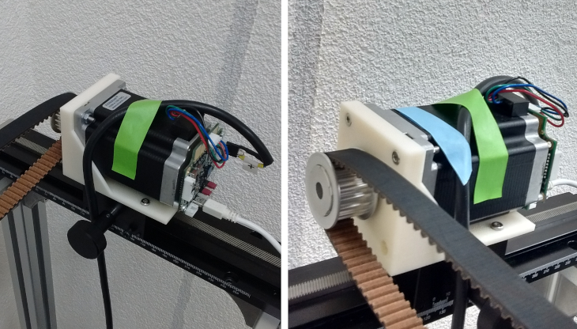

A collection of Cadquery parametric models (2018-2020)

The title says it all, but I will elaborate a bit more.
When I started this blog I had the intention of writing about parametric 3d design using open source software. Years have gone by, and I am now deciding to have a more open approach and write about everything that I feel like. To make things a bit more organized I am putting all the blog entries from 2018 to 2020 in this single one. The table of contents below should help in jumping quickly to whatever you find interesting.
If you are wondering why I left the dogbones as a separate blog post, here is the answer: This is by far the page with the most hits on my blog. Americans seem to like it, and for that reason I decided to leave it untouched. Thinking about it I can see it as a great model to show the benefits of parametric design. Only a few lines of code and TA-DA, you’ve got your model and you can easily modify the dimensions as you wish. Simple and efficient, CAD guru stuff.
I also left the chess set post as a historical landmark, after all it was the first blog post on this platform (github pages), by coincidence, exactly 4 years ago.
Final thing I want to mention: Looking at the analytics of the website, no one seems to care about the kugelwellen horn. I personally find this kind of design, that uses physics equations to model things, of great value on the skill-set of an engineer.
Table of Contents
Turners Cube (04/07/2018)

Back in Brazil, during my machinist apprenticeship, one of the lathe tasks of the manual machining course was to make a turners cube. Basically you need to turn a cube in the lathe and make some holes, that if carefully bored to specific dimensions, you end up with usually two captive cubes inside one another. At the time I was only a young teenager and the captive cube was a very attractive challenge to me. I naively thought that only round parts could be made at the lathe, so I was impressed with the cube with other cubes inside coming out of the machine. Sadly nowadays I don’t know anymore where mine is. Hopefully at my mom’s place.
You can have as many cubes as you want inside. Back then, the ones who actually made the cube usually went for three, so I did and I still think that three is the right number if you’re doing it on the manual lathe. Two is too easy. Four is annoying because there is a lot of repetition of the same operations. Three is a good number because you proved your point in showing the instructor what you’re capable of, and is not as annoying to make as the four cubes version.
Leaving 2003 behind and back to 2018, I was thinking that the repetitive nature of the object makes it a nice model for cadqquery. So here is the script that I came up with:
import cadquery as cq
from math import sqrt
captive_cube_size = 10 # mm
n_of_cubes = 3 # besides the innermost captive cube
small_holes = True # False = innermost captive cube without holes
cube_size = captive_cube_size*2**n_of_cubes # total size of the cube
sh_size = captive_cube_size/sqrt(2) # diameter of the hole on the smallest cube
cube = cq.Workplane("front").box(cube_size, cube_size, cube_size)
for x in range(n_of_cubes):
cube = cube.faces(">X").workplane(centerOption='CenterOfBoundBox').hole(captive_cube_size*(sqrt(2)**(2*x+1)), (cube_size-captive_cube_size*2**x)/2)
cube = cube.faces(">Y").workplane(centerOption='CenterOfBoundBox').hole(captive_cube_size*(sqrt(2)**(2*x+1)), (cube_size-captive_cube_size*2**x)/2)
cube = cube.faces(">Z").workplane(centerOption='CenterOfBoundBox').hole(captive_cube_size*(sqrt(2)**(2*x+1)), (cube_size-captive_cube_size*2**x)/2)
cube = cube.faces("<X").workplane(centerOption='CenterOfBoundBox').hole(captive_cube_size*(sqrt(2)**(2*x+1)), (cube_size-captive_cube_size*2**x)/2)
cube = cube.faces("<Y").workplane(centerOption='CenterOfBoundBox').hole(captive_cube_size*(sqrt(2)**(2*x+1)), (cube_size-captive_cube_size*2**x)/2)
cube = cube.faces("<Z").workplane(centerOption='CenterOfBoundBox').hole(captive_cube_size*(sqrt(2)**(2*x+1)), (cube_size-captive_cube_size*2**x)/2)
if small_holes:
cube = cube.faces("<X").workplane(centerOption='CenterOfBoundBox').hole(sh_size)
cube = cube.faces("<Y").workplane(centerOption='CenterOfBoundBox').hole(sh_size)
cube = cube.faces("<Z").workplane(centerOption='CenterOfBoundBox').hole(sh_size)
show_object(cube)
I based my script in the innermost captive cube and in the square root of 2, which is a number associated with circles and squares. That makes the cube look good and proportional. The drawback is that the final size grows quadratically with the number of cubes resulting in a big thing if you go for a lot of cubes.
CD Organizer (18/08/2018)

I had some old CDs lying around the house and I decided to organize them in a single place. I thought of 3d printing something to help, but after a brief search around the internet I couldn’t find anything that I liked. The ones I could find were big and clunky, leading to long printing times. The “simple” one (that wasn’t simple at all) that I found had the slots a bit undersized and I couldn’t fit the CDs. I could have re-scaled the model but that print took me around 3 hours and I started to wonder if I should repeat it.
I decided to come up with my own design.
import cadquery as cq
slots = 8 # number slots (number of CDs in this case)
slot_width = 11.0 # mm, slot size (slightly bigger than a CD case width)
slot_depth = 20.0 # mm
slot_length = 140.0 # mm
thickness_wall = 0.8 # mm
thickness_bottom = 2.0 # mm
spacing = slot_width + thickness_wall
cdorg = cq.Workplane("front").box(slot_length+thickness_wall, spacing*slots+thickness_wall, slot_depth+thickness_bottom) .\
faces(">Z").workplane().center(thickness_wall,-(spacing/2*(slots-1))).pushPoints([(0, y * spacing) for y in range(0, slots)]).rect(slot_length+thickness_wall, slot_width).cutBlind(-slot_depth).\
faces(">Z").rect(slot_length/1.6, spacing*slots+thickness_wall).cutBlind(-slot_depth)
show_object(cdorg)
The print took only 14 minutes because I could take advantage of the 0.8mm nozzle and print the walls in a single pass of the hotend. The design turned out to be not super visually appealing but the function was on point. It keeps the CDs more accessible than just piling them up and it makes everything more stable against tipping over.
More important than the physical object itself was that I learned something. I find this method of using the for loop (python’s list comprehension) inside the pushPoints method very elegant and I plan to reuse this code for lathe tools and drill bits organizers among others.

Kugellwellenhorn (19/08/2018)

I have always been intrigued by horns. Actually by passive devices in general; tuned mass dampers, RLC circuits to name a few. Researching more about horns I found two designs that I’d like to explore more. One is the Kugelwellenhorn and the other is the Le Cleah’c horn. More info about the former can be found here, in a lecture apparently gaven by Le Cleach’c himself when he was still alive.
About Kugellwellen horn, the design that I decided to approach first, all the info you need you can probably find on the site of Bjorn Kolbrek. Kolbrek seems to be an expert on the subject, and I enjoyed reading his articles. The math on his reports was a bit beyond my comprehension and I didn’t want to dive so deep into the subject. My goal was only to design and materialize the horn. Turns out that this is not hard at all, Just take a look at the script below and you’ll see that all you need is about 30 lines of code.
import cadquery as cq
from math import pi, sqrt, exp
td = 12 # mm, throat diameter
steps = 450 # related to the length of the horn
fc = 480 # Hz, cuttof frequency
c = 344000 # mm/s, speed of sound through air
m = 4*pi*fc/c
y0 = td/2
r0 = c/(pi*fc)
h0 = r0 - sqrt(r0*r0-y0*y0)
s0 = 2*pi*r0*h0
edg_points = []
for x in range(steps):
h = h0*exp(m*x)
s = 2*pi*r0*h
y = sqrt((s/pi)-h*h)
xh = x-h+h0
edg_points.append([y, xh])
edg_points[0] = [y0, 0]
horn = cq.Workplane("XY").move(y0, 0).spline(edg_points).wire().revolve()
show_object(horn)

Lecleach suggests that it’s important to shape the horn past 180 degrees but as you can see it can be tricky to 3d print the involute part of the horn. Would be interesting to come up with some 3D printing hack to print the involute. Maybe one day I will come back to this topic to try something in this direction. (Message from the future: It never happened, I never got back to this.)
Dovetail Guide (01/04/2019)

This is my take on dovetail guides, I designed this to be 3d printed and parametric. Using parametric design makes it very easy to tune the dovetail ratio and to fit different magnets that one may have at hand. Higher ratios (e.g 1:8) are good for hardwoods and lower ratios (e.g. 1:5) are better suited for softwoods.
Several models can be found on the internet and I would like to buy one but with all the import taxes it becomes expensive. Also I don’t know what ratio I want exactly, so it makes sense to print my own to experiment with.
I was particularly inspired by David Barron and as seen in his videos, the simple jig works with magnets that hold the saw in place, making the dovetail cutting process easier.
import cadquery as cq
# A simple dovetail saw guide for woodworking
size = 40.0 #mm, size of the blank
ratio = 6 #dovetail ratio e.g. 1:6.
tab_top = 15.0 #mm, thickness of the top tab
tab_back = 15.0 #mm, thickness of the back tab
magnet_diameter = 5.2 #mm
magnet_thickness = 8.5 #mm
magnet_spacing_between = 24.0 #mm
embossing = True
dovetail_guide = cq.Workplane("top").rect(size, size).workplane(offset=size).rect(size-(size/float (ratio))*2, size).loft(combine=True) .\
faces(">Y").workplane().transformed(offset=(0, -tab_top, 0)).rect(size, size).cutBlind(-size+tab_back) .\
faces(">X").workplane(centerOption='CenterOfBoundBox').pushPoints([(-magnet_spacing_between/2,size/2-tab_top/2), (magnet_spacing_between/2,size/2-tab_top/2)]).hole(magnet_diameter, magnet_thickness) .\
faces("<X").workplane(centerOption='CenterOfBoundBox').pushPoints([(size/2-tab_back/2, -magnet_spacing_between/2), (size/2-tab_back/2, magnet_spacing_between/2)]).hole(magnet_diameter, magnet_thickness)
if embossing:
dovetail_guide = dovetail_guide.faces(">Z").workplane(centerOption = 'CenterOfBoundBox').text("1:"+str(ratio), 8, -1, cut=True, combine=False, clean=True, font='Arial', kind='regular', halign='center', valign='center')
show_object(dovetail_guide)
Sawing Guides (08/05/2020)

The idea here is the same as my dovetail jig but now one is intended to aid making square cuts on wood with hand saws and the other 45 degrees cut for joinery.
I put the option of having a recess on these two jigs for clearance between the saw and the jig itself. I realized that depending on how you execute the cut the saw may bite the jig. It doesn’t alter the performance of the jig, but it leaves scratch marks. Cutting a recess on the dovetail jig makes it unbalanced but these two not, at least in my opinion.
import cadquery as cq
# A simple woodworking jig for guiding a saw at right angles.
size = 50.0 # mm, size of the blank
width = 35.0 # mm
tab_top = 18.0 # mm, thickness of the top tab
tab_back = 12.0 # mm, thickness of the back tab
magnet_diameter = 5.2 # mm
magnet_thickness = 8.5 # mm
magnet_spacing_between = 30.0 # mm
clearance = True
clearance_size = 2.0 # mm
right_angle_guide = cq.Workplane("top").box(width, size, size).\
faces(">X").workplane(centerOption='CenterOfBoundBox').pushPoints([(-magnet_spacing_between/2, size/2-tab_top/2), (magnet_spacing_between/2, size/2-tab_top/2)]).hole(magnet_diameter, magnet_thickness) .\
faces("<Y").workplane(centerOption='CenterOfBoundBox', offset=-tab_back).move(0, -tab_top/2).rect(size, size-tab_top).cutBlind("next")
if clearance:
right_angle_guide = right_angle_guide.faces(">X").workplane(centerOption='CenterOfBoundBox').move(0, -tab_top).rect(size, size).cutBlind(-clearance_size)
show_object(right_angle_guide)
import cadquery as cq
# A simple 45 degrees hand saw guide for woodworking
size = 40.0 # mm, height and lenght and of the guide. The width is double this value
tab_top = 18.0 # mm, thickness of the top tab
tab_back = 12.0 # mm, thickness of the back tab
magnet_diameter = 5.2 # mm
magnet_thickness = 8.5 # mm
magnet_spacing_between = 30.0 # mm
clearance = True
clearance_size = 2.0 # mm
guide = cq.Workplane("front").lineTo(size*2, 0).lineTo(size, size).close().extrude(size) .\
faces(">X").workplane(centerOption='CenterOfBoundBox').pushPoints([(-magnet_spacing_between/2, size/2-tab_top/2), (magnet_spacing_between/2, size/2-tab_top/2)]).hole(magnet_diameter, magnet_thickness) .\
faces("<Y").workplane(centerOption='CenterOfBoundBox', invert=True, offset=tab_back).move(0, tab_top/2).rect(size*2, size-tab_top).cutBlind(size)
if clearance:
guide = guide.faces('>(1,1,0)').workplane(centerOption='CenterOfBoundBox').move(0, -tab_top).rect(size*1.6, size).cutBlind(-clearance_size)
show_object(guide)
Recently I got myself a Gyokucho 615 and I could test it with the jig. No need to say it works like a charm. The cut was square and the texture of the end grain after the cut was very smooth. What a saw, btw! I managed to make a few frames with this setup.

Parametric Spiral Lampshade (11/05/2020)

My intention here was to make a 3D printed bedside lamp. I got really close to what I wanted with this cadquery one liner.
import cadquery as cq
lampshade = cq.Workplane("front").rect(150.0/1.618, 150.0).twistExtrude(150, 90)
show_object(lampshade)

Even though I like simple, minimalistic things, this was just too simple. I thought it would look cooler if it had a gradual decrease of its size. Here’s the code I came up with for that:
import cadquery as cq
length = 150.0 # mm
max_height = 150.0 # mm
height_increment = 15.0 # mm, Z axis increment per step
rotation_step = 10 # degrees, rotation of the XY plane per step
growth_factor = 1.1 # maybe decrease factor ? ¯\_(ツ)_/¯
spiral_lampshade = cq.Workplane("front").rect(length/1.618, length) .\
workplane(offset=height_increment).rect(length/1.618, length) .\
loft(combine=True)
next_len = float (0)
height = float (0)
rotation = rotation_step
while height <= max_height-height_increment:
next_len = length/growth_factor
spiral_lampshade = spiral_lampshade.faces(">Z").rect(length/1.618, length).workplane().transformed(offset=(0, 0, height_increment), rotate=(0, 0, rotation)).rect(next_len/1.618, next_len).loft(combine=True)
length = next_len
rotation += rotation_step
height = height+height_increment
show_object(spiral_lampshade)

Plywood Connectors (13/05/2020)

I made this about two years ago and even though I liked the outcome pretty much I decided not to post anything about it at the time.
I didn’t want to harm in any way the company that makes the original but at this point it doesn’t make any sense to hold back, googling “plywood connectors” or “wood connectors DIY furniture” you will find a vast amount of Chinese knockoffs.
At the time of writing I found this on the internet. Another interesting thing I found was this aluminium version where they claim to be in business since 2013.
I first learned about this by the name of playwood. I found it when I was looking for a small bookshelf DIY project. There are some reasons why I didn’t buy directly from these guys. First, they are not super expensive but you need quite a few in order to make something useful, then, with post and import taxes it starts to become expensive. Second, I have 3d printers and I like to make stuff.
As always, I kept the design as minimalist as possible. My version takes a socket head cap screw on one side and a hex nut on the other side. I’ve used M6 screws because it was what I had at hand at the time but I’m pretty sure smaller screws are also OK for this application.
import cadquery as cq
from math import cos, sqrt, pi
# shared parameters
thickness = 12.0 # mm
width = 10.0 # mm
screw_clearance = 6.8 # mm, diameter of the screw + some clearance
# outer jaw parameters
oface_length = 38.0 # mm outer face length
oleg_length = 42.0 # mm outer leg length
support_height = 4.0 # mm, I'm calling support this small bump where the plywood butt will rest against
# minimum plywood thickness it will hold = sqrt(2)*support_height BTW
counterBore_diameter = 11.2 # mm
screwHead_height = 6.0 # mm
# inner jaw parameters
# This inner leg lenght is just a recomendation, it will be flush with the outer jaw leg
ileg_length = oleg_length-(thickness+support_height)*sqrt(2) # mm
#inner jaw hardware parameters
nut_thickness = 5.0 # mm
nut_widthAcrossCorners = 12.0 # mm
ojaw = (cq.Workplane("front").line(-oface_length/2, 0).
line(-cos(pi/4)*oleg_length, cos(pi/4)*oleg_length).
line(thickness*sqrt(2), 0).
line((cos(pi/4)*oleg_length-thickness), -cos(pi/4)*oleg_length+thickness).
line(support_height, support_height).
lineTo(0, thickness+support_height).mirrorY().extrude(width, both=True).
faces("<Y").workplane().cboreHole(screw_clearance, counterBore_diameter, screwHead_height))
ijaw = (cq.Workplane("front").line(-(oface_length-(thickness*sqrt(2)-thickness)*2-support_height*2)/2, 0).
line(-cos(pi/4)*ileg_length, cos(pi/4)*ileg_length).
line(thickness, 0).
line((cos(pi/4)*ileg_length-thickness), -cos(pi/4)*ileg_length+thickness).
lineTo(0, thickness).mirrorY().extrude(width, both=True).
faces("<Y").workplane().hole(screw_clearance).
faces(">Y[-2]").workplane().polygon(6, nut_widthAcrossCorners).cutBlind(-nut_thickness).
translate((0,thickness+support_height,0)))
show_object(ojaw)
show_object(ijaw)

Man Against Washing Machine (15/05/2020)

One of my personal favorite uses of 3d printers at home is to fix broken stuff. This object is not special but I’m posting it here because it involves modeling parametric threads.
Modeling parametric threads can be demanding. On top of that if you have to model a thread, it is probably some funky special thread. Overall I’m happy with how this trapezoidal thread came out, but I’m not sure whether this is the best way to design threads in Cadquery. (Message from the future: Check my 3d printed door knob on thispost. It is a better way to design threads, with a smooth entry and exit of the threads)
import cadquery as cq
from math import sin, cos, pi
lenght = 32
minor_diameter = 18.0
pitch = 4.9
pts = []
for t in range(lenght):
x = minor_diameter/2*cos(t)
y = minor_diameter/2*sin(t)
z = pitch/(2*pi)*t # helix lenght
pts.append([x,y,z])
path = cq.Workplane("XY").spline(pts).wire()
thread = cq.Workplane("XZ").move(minor_diameter/2, 0).line(3.2, 0.5).line(0,1.0).line(-3.2, 0.5).close().sweep(path, isFrenet=True)
foot = cq.Workplane("XY").circle(18.5/2.0).extrude(26.0) .\
faces("<Z").workplane().circle(25.0/2.0).extrude(5.0) .\
faces("<Z").workplane().polygon(8, 44.0).extrude(14.0) .\
faces("<Z").workplane().hole(14.0, 42.0).translate((0,0,pitch/2.0))
foot = foot.union(thread)
show_object(foot)
This object is a washing machine adjustment pad that went missing (don’t ask me how). At least there were 3 left so I could replicate the missing one. The tolerance on the mating thread was big, because even printing without support on my cheap 3d printer, it worked in the first attempt! No second iteration was needed :)

Parametric Stepper Motor Bracket (01/08/2020)

The price estimations that I received for this object to have it made out of welded steel (by professional welders), were in the 100-130 EUROS range, 10 days delivery time. As the application intended for it had a light load I decided to just model and 3d print it. Took me half an hour of 3d modeling and 4 hours for the 3d printing process. I printed it out of ABS on a professional grade printer from the university.
import cadquery as cq
width = 66.0 # mm
fplate_height = 60.0 # mm
fplate_thickness = 10.0 # mm
fplate_between_holes = 47.1 # mm, rectangular distance between stepper mounting holes (NEMA 23 = 47.1)
fplate_screw_clearance = 5.0 # mm
fplate_cbore_diameter = 7.5 # mm
fplate_cbore_depth = 4.0 # mm
main_bore_diameter = 28.2 # mm
main_cbore_diameter = 40.0 # mm
main_cbore_depth = 2.0 # mm
bplate_length = 86.0 # mm
bplate_thickness = 4.0 # mm
bplate_between_holes = 50.0 # mm, holes to mount it to the frame
bplate_holes_offset = 5.0 # mm
bplate_screw_clearance = 5.0 # mm
bplate_cbore_diameter = 7.5 # mm
bplate_cbore_depth = 2.0 # mm
gusset_thickness = 3.0 # mm
gusset = True
stepper_bracket = cq.Workplane("front").box(width, fplate_thickness, fplate_height+bplate_thickness) .\
faces(">Y").workplane().move(0, bplate_thickness/2).rect(fplate_between_holes, fplate_between_holes, forConstruction=True) .\
vertices().cboreHole(fplate_screw_clearance, fplate_cbore_diameter, fplate_cbore_depth) .\
faces("<Y").workplane().move(0, bplate_thickness/2).cboreHole(main_bore_diameter, main_cbore_diameter, main_cbore_depth) .\
faces("<Y").workplane(centerOption='CenterOfBoundBox').move(0, -fplate_height/2).rect(width, bplate_thickness).extrude(bplate_length) .\
faces("<Z[1]").workplane().move(0, bplate_holes_offset).rect(bplate_between_holes, bplate_between_holes, forConstruction=True) .\
vertices().cboreHole(bplate_screw_clearance, bplate_cbore_diameter, bplate_cbore_depth)
if gusset:
stepper_bracket = stepper_bracket.faces(">X").workplane(centerOption='CenterOfBoundBox').move(0, -(fplate_height+bplate_thickness)/2) .\
line((bplate_length+fplate_thickness)/2, 0).line(0, fplate_height).close().extrude(-gusset_thickness) .\
faces("<X").workplane(centerOption='CenterOfBoundBox').move(0, -(fplate_height+bplate_thickness)/2) .\
line(-(bplate_length+fplate_thickness)/2, 0).line(0, fplate_height).close().extrude(-gusset_thickness)
